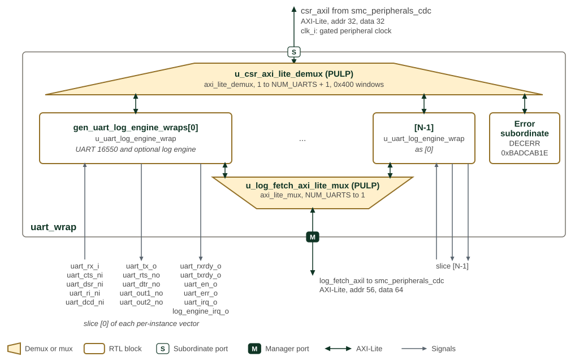

UART 16550
1. Overview
The UART provides a 16550-style programming interface over 32-bit AXI4-Lite. It transmits and receives serial characters, buffers them in independently sized FIFOs, and reports line, modem and FIFO-integrity events. Extensions include larger FIFO depths, FIFO data/pointer parity protection, extended receive thresholds and a FIFO-error interrupt.
The TX and RX FIFOs default to 16 entries each. Software selects FIFO or single-character operation, frame format, baud divisor and interrupt enables. Modem signals provide status and software-controlled outputs; CTS does not stop transmission and RTS does not automatically throttle reception. DMA-ready outputs indicate service conditions but do not themselves move data.

SMC UART wrapper shows the SMC wrapper around the UART 16550.
uart_wrap runs on one clock, clk_i, which in the SMC is the gated
peripheral clock; both of its AXI4-Lite ports cross to the SMC clock in
smc_peripherals_cdc. The register port has 32-bit address and data. The
demux u_csr_axi_lite_demux and the mux u_log_fetch_axi_lite_mux are PULP
blocks, marked by the project name in parentheses. The demux selects the
instance whose window, 0x400 bytes apart, contains the address, and sends
every other address to an error slave that answers DECERR with read data
0xBADCAB1E.
Each instance, gen_uart_log_engine_wraps[i].u_uart_log_engine_wrap, holds
one UART 16550 and, when bit i of GEN_LOG_ENGINES is set, a log engine;
Log-engine wrapper diagram
shows its contents. The mux
u_log_fetch_axi_lite_mux merges the instances' log-fetch manager ports
onto the single log-fetch port, with 56-bit address and 64-bit data. The SMC
instantiates four UARTs, each with a log engine and 32-entry TX and RX FIFOs.
Every per-instance port is a vector with one bit per instance, and the figure
labels the slice that instance 0 drives. In the SMC, uart_dsr_ni,
uart_ri_ni and uart_dcd_ni are tied high, and uart_dtr_no,
uart_out1_no, uart_out2_no, uart_rxrdy_o and uart_txrdy_o are
unconnected. uart_irq_o, uart_err_o and log_engine_irq_o of each
instance are ORed into one interrupt, peripheral interrupts 18 to 21.
2. Architecture
uart_16550 selects the register view; uart_core manages buffering, baud
timing, modem state and interrupts; uart_tx and uart_rx serialize and
sample characters. All core logic uses clk_i.
2.1. Transmit and Receive Paths
With LCR.DLAB=0, a write to THR supplies a transmit byte and a read of RBR
consumes a received byte. FIFO mode queues characters; non-FIFO mode uses one
holding register per direction. Changing FCR.FIFO_ENABLE clears both FIFOs
and the single-character holding state, so changing mode can discard data.
The transmitter runs whenever enabled and data is available, independently of
CTS. LSR.THRE means the TX FIFO/holding register is empty; LSR.TEMT also
requires the serializer to be idle. Use TEMT when the final character must have
left the transmitter before reconfiguration.
The receiver synchronizes rx_i and uses a three-sample majority decision at
16-times-baud sampling. Received parity, framing and break indications accompany
characters; software reads line status before consuming their data. In FIFO
mode, an overrun drops the newly received character; in non-FIFO mode an unread
character can be overwritten in RBR. Frame format supports 5–8 data bits, selectable parity
and stop-bit configuration. LCR.SET_BREAK forces the transmit line low.
2.2. Baud Timing and Register Views
LCR.DLAB selects DLL/DLM at offsets 0x00 and 0x04 for divisor programming.
With DLAB clear, these offsets select RBR/THR and IER. Other offsets retain their
normal meaning. Serial operation is disabled when the combined divisor is zero;
otherwise baud rate is clk_i_frequency / (16 * (divisor + 1)).
The smallest usable divisor, 1, gives a maximum baud rate of clk_i_frequency/32.
2.3. FIFO Protection and Line Errors
FIFO/holding-register data and FIFO pointers have parity protection. An internal
parity failure drives err_o and can raise the separately enabled FIFO-error
interrupt. This is different from parity in a received serial frame.
| LSR field | Meaning |
|---|---|
|
Receive FIFO overrun: a character arrived while the receive FIFO was full. |
|
Parity error on the character exposed at the receive head. |
|
Invalid stop bit on that character. |
|
Break: the received frame remained low. |
In the current RTL, overwriting an unread non-FIFO RBR does not set OE. These error fields clear on an LSR read. Capture the status once for the character being serviced; repeated diagnostic reads can consume error evidence. The generated map specifies the status fields and their access side effects.
2.4. Interrupt Priority and Service
irq_o reports the OR of the interrupt requests. IIR.INTERRUPT_PENDING=0
means a request is pending; IIR.INTERRUPT_ID identifies the highest-priority
source. The following table is ordered highest first; IDs are the three-bit
field values, not the full IIR register value.
| ID | Source | Service / control |
|---|---|---|
7 |
FIFO integrity error |
Investigate |
3 |
Receiver line status |
Capture LSR error fields, then service receive data;
controlled by |
6 |
Receive timeout |
Read RBR to clear the latched timeout. It is generated in FIFO mode after roughly four character times without receive-FIFO occupancy change. In the current RTL this request is not gated by IER. |
2 |
Received data ready |
Drain RBR below the selected FIFO trigger, or consume
the non-FIFO character; controlled by |
1 |
Transmit holding register empty |
Write THR, or read IIR while this is the
selected source, to clear its latch. A subsequent transition back to empty
re-arms it; controlled by |
0 |
Modem status |
Read MSR once to capture levels and clear delta bits;
controlled by |
MCR.OUT2 does not gate irq_o; its modem and loopback uses are described
in the programming section. The ITR
extension can force interrupt sources for testing. Clear test settings after
use. Do not rely on clearing IER alone to silence the unmasked timeout source;
use the subsystem interrupt controller when masking all delivery is required.
3. Interface
3.1. Configuration Parameters
The UART 16550 module provides configurable parameters to customize FIFO sizes according to system requirements.
The parameters and ports of uart_16550 are listed in uart_16550.
3.2. Modem Control Interface
The modem control interface provides full RS-232 modem signaling compatibility. All modem signals are active low at the pins, matching the RS-232 convention.
The modem inputs are status only. Each one is synchronized and then
reported in the MSR register in the opposite polarity (a bit reads 1
while its pin is asserted low), and a change on any of them raises the
Modem Status Interrupt. None of them gates the datapath: this component
implements no automatic flow control, so software must act on the
interrupt to throttle traffic. See the Programming section.
3.3. DMA Interface
The DMA interface provides signals for Direct Memory Access controllers
to manage data transfers automatically. The rxrdy_o and txrdy_o signals
indicate when DMA operations can proceed, with behavior configurable through
FIFO control modes.
3.5. Clock Domain
All interface signals operate in a single clock domain referenced to
clk_i. The following timing considerations apply:
-
AXI4-Lite Protocol: All AXI4-Lite signals must meet setup and hold time requirements relative to
clk_i -
Asynchronous Inputs:
rx_iand modem control inputs (cts_ni,dsr_ni,ri_ni,dcd_ni) are asynchronous and are synchronized internally -
Reset Requirements:
rst_nishould be asserted asynchronously and deasserted synchronously relative toclk_i
3.6. Serial Interface Timing
-
Baud Rate: Serial data rate is determined by the divisor latch registers (DLL/DLM) and uses 16x oversampling
-
Maximum Baud Rate: Limited to
system_clock_frequency / 32- a divisor of0disables the transmitter and receiver, so the smallest usable divisor is1 -
Data Frame: Configurable start bit (always 1), 5-8 data bits, optional parity bit, 1-2 stop bits
3.7. Protocol Support
The interface supports standard UART communication protocols:
-
RS-232: Full modem control and serial data signaling
-
RS-485: Can be used with external transceivers (using RTS for direction control)
-
Industrial Protocols: Compatible with Modbus RTU and other industrial serial protocols
-
Debug Interfaces: Suitable for system debug and console applications
The comprehensive interface design ensures compatibility with a wide range of serial communication requirements while maintaining the flexibility needed for diverse embedded system applications.
4. Programming
4.1. Baud Rate and Frame Configuration
-
Quiesce the data path before reconfiguration; wait for
LSR.TEMTif queued transmit data must finish. Serialize accesses so another context cannot use THR/RBR/IER while DLAB selects the divisor view. -
Choose a supported frame format in LCR. Compute
divisor = round(clock_frequency / (16 * desired_baud_rate)) - 1and check that it is in the usable 16-bit range 1–65535. -
Set
LCR.DLAB=1(LCRis at0x0C), preserving the selected frame format. -
Write DLL at
0x00and DLM at0x04, then clear DLAB before normal data/IER accesses. The two divisor writes are not an atomic update.
At 50 MHz, a requested 115200 baud gives divisor 26 (0x001A). The actual baud
rate is 50000000 / (16 * 27), approximately 115741 baud. Divisor zero disables
both transmitter and receiver; it is not the highest-speed setting.
4.2. FIFO Configuration
FCR is write-only at 0x08, sharing its address with the read-only IIR.
Maintain a software copy of the persistent FCR settings rather than attempting
a read-modify-write through that address.
-
Set
FCR.FIFO_ENABLEfor FIFO operation; changing it discards buffered data. -
Set
FCR.RCVR_TRIGGERandECR.RCVR_TRIGGER_MS2Bfor the receive threshold. Codes 0–3 mean 1, 4, 8 and 14 characters; codes 4–11 mean 32, 64, 128, 256, 512, 1024, 2048 and 4096. Choose a threshold supported byRX_FIFO_DEPTH; unsupported selections do not assert the receive watermark. -
Set
FCR.DMA_MODE_SELECTif using mode-1 DMA service indications. -
When discarding data intentionally, pulse
FCR.RCVR_FIFO_RESETorFCR.XMIT_FIFO_RESET, preserving FIFO enable, DMA mode and trigger settings.
For conservative polled transmission, wait for LSR.THRE, then write no more
than the configured FIFO capacity (one byte when FIFO mode is disabled).
For reception, check LSR.DR, capture line errors and read RBR. Do not treat
an AXI write acknowledgement as a guarantee that a full transmit buffer accepted
a character.
4.3. Interrupt Configuration
Program the required IER enables with DLAB clear. Read IIR and service its
highest-priority source according to UART interrupt priority and service, then
repeat until INTERRUPT_PENDING reads one. Take care with read-to-clear LSR/MSR
fields and the THRE acknowledgement side effect of IIR reads. OUT2 is not an
interrupt enable in this implementation; the receive-timeout source is not
masked by IER.
4.4. Modem Status and Flow Control
The component does not implement automatic flow control. The cts_ni,
dsr_ni, ri_ni and dcd_ni inputs are synchronized and reported in the
MSR register only - the transmitter keeps sending while the TX FIFO is
non-empty regardless of CTS, and the receiver never deasserts rts_no on
its own. Any flow control protocol must therefore be driven by software.
To use CTS-based flow control on the transmit side:
-
Enable the Modem Status Interrupt by setting EDSSI=1 in IER (0x04)
-
On an interrupt, read IIR (0x08) to confirm the Modem Status source
-
Read MSR (0x18).
MSR.CTSreads1whilects_niis asserted (low), that is, while the remote device can accept data.MSR.DCTSindicates CTS changed since the previous MSR read -
Stop writing THR while
MSR.CTSreads0, and resume when the next Modem Status Interrupt reports it back at1
The four delta bits (DCTS, DDSR, TERI, DDCD) are sticky and are cleared by any read of MSR, including a read that only intended to sample one of them. TERI records only the trailing edge of ring indication; the other delta bits record either transition. A single read must therefore be used to capture the state of every modem input. Because they are sticky, a change is still reported even if the input returns to its previous level before software gets to the read - the delta bit records that something moved, while the level bits only show where the input ended up.
On the receive side, software throttles the remote device by clearing
MCR.RTS (which drives rts_no high, deasserted) when the RX FIFO
approaches its trigger level, and setting it again after draining RBR.
Both loopback modes bypass the pins, so the MSR level bits no longer reflect
the modem inputs. With MCR.LOOP set, MSR is fed internally from the MCR
bits (CTS from RTS, DSR from DTR, RI from OUT1, DCD from OUT2) and the modem
outputs are deasserted. With MCR.LINE_LOOPBACK set, the modem inputs are
routed straight back out to the modem outputs and all four MSR level bits
read 0. If both bits are set at once the two paths resolve priority
differently: the modem outputs follow line loopback, while MSR follows system
loopback. Delta bits and the Modem Status Interrupt track whatever values are
substituted.
5. Memory Map and Register Reference
5.1. Memory Map
The core decodes a 64-byte register space with 32-bit registers on four-byte
boundaries. Offsets 0x00 and 0x04 change meaning with LCR.DLAB; offset
0x08 reads IIR and writes FCR. See Programming for safe divisor and FIFO
configuration. The generated views below retain all field definitions, including
ECR extended trigger selection and ITR interrupt tests.
5.2. Detailed Register Map
The first two register views apply when LCR.DLAB=0; read-only and write-only
aliases at the same offset are shown separately. The divisor-latch view applies
when LCR.DLAB=1.
UART 16550 Main Address Map
Contains the mode-independent registers and the read-only registers accessible only
when `DLAB = 0`.
Register List:
| Address | Name | Access | Description |
|---|---|---|---|
| 0x0 | RBR | R | Receiver Buffer Register |
| 0x4 | IER | RW | Interrupt Enable Register |
| 0x8 | IIR | R | Interrupt Identification Register |
| 0xC | LCR | RW | Line Control Register |
| 0x10 | MCR | RW | Modem Control Register |
| 0x14 | LSR | R | Line Status Register |
| 0x18 | MSR | R | Modem Status Register |
| 0x1C | SCR | RW | Scratch Register |
| 0x20 | ECR | RW | Extended Control Register |
| 0x24 | ITR | RW | Interrupt Test Register |
Register Details:
RBR
| Bits | Field | Access | Reset | Description |
|---|---|---|---|---|
| 31:8 | Reserved | - | - | Reserved |
| 7:0 | DATA | R RMOD | 0x0 | Received Data. Contains a received character. If FIFOs are enabled, this field points to the bottom of the RX FIFO. Otherwise, this field points to a single- byte Receiver Buffer Register. |
IER
| Bits | Field | Access | Reset | Description |
|---|---|---|---|---|
| 31:5 | Reserved | - | - | Reserved |
| 4 | EFEI | RW | 0x0 | Enable FIFO Error Interrupt. |
| 3 | EDSSI | RW | 0x0 | Enable (Delta Status of) Modem Status Interrupt. |
| 2 | ELSI | RW | 0x0 | Enable (Receiver) Line Status Interrupt. |
| 1 | ETBEI | RW | 0x0 | Enable Transmitter Buffer Empty (Transmitter Holding Register Empty) Interrupt. |
| 0 | ERBFI | RW | 0x0 | Enable Receiver Buffer Full (Received Data Ready) Interrupt. |
IIR
| Bits | Field | Access | Reset | Description |
|---|---|---|---|---|
| 31:8 | Reserved | - | - | Reserved |
| 7:6 | FIFOS_ENABLED | R | 0x0 | FIFOs Enabled: * `0x0` - FIFOs are disabled * `0x3` - FIFOs are enabled |
| 5:4 | Reserved | - | - | Reserved |
| 3:1 | INTERRUPT_ID | R | 0x0 | Interrupt ID: * `0x7` - FIFO Error Interrupt (priority 0) * `0x3` - Receiver Line Status Interrupt (priority 1) * `0x6` - Reception Timeout Interrupt (priority 2) * `0x2` - Received Data Ready Interrupt (priority 3) * `0x1` - Transmitter Holding Register Empty Interrupt (priority 4) * `0x0` - Modem Status Interrupt (priority 5) |
| 0 | INTERRUPT_PENDING | R | 0x1 | Interrupt Pending. Active-low. |
LCR
| Bits | Field | Access | Reset | Description |
|---|---|---|---|---|
| 31:8 | Reserved | - | - | Reserved |
| 7 | DLAB | RW | 0x0 | Divisor Latch Access Bit. If set, allows access to the `DLL` and `DLM` registers when accessing addresses `0x0` and `0x4`, respectively. If unset, allows access to the `THR`, `RBR`, and `IIR` registers. |
| 6 | SET_BREAK | RW | 0x0 | Set Break. If set, forces the `tx_o` output to `0` to cause a break condition on the receiving UART. |
| 5 | STICK_PARITY | RW | 0x0 | Stick Parity. If set, forces the transmit and received parity bits to be `0` if even parity is selected and `1` if odd parity is selected. |
| 4 | EPS | RW | 0x0 | Even Parity Select: * `1` - even parity * `0` - odd parity |
| 3 | PEN | RW | 0x0 | Parity Enable. |
| 2 | STB | RW | 0x0 | Stop Bits: * `0` - 1 stop bit. * `1` - 2 stop bits (or 1.5 stop bits if word length is set to 5 bits) |
| 1:0 | WLS | RW | 0x0 | Word Length Select: * `0x0` - 5 bits per character * `0x1` - 6 bits per character * `0x2` - 7 bits per character * `0x3` - 8 bits per character |
MCR
| Bits | Field | Access | Reset | Description |
|---|---|---|---|---|
| 31:6 | Reserved | - | - | Reserved |
| 5 | LINE_LOOPBACK | RW | 0x0 | Line Loopback. If set, the `rx_i` input is internally connected to the `tx_o` output. |
| 4 | LOOP | RW | 0x0 | System Loopback. If set, the transmitter is internally connected to the receiver. The `tx_o` output is set to `1`. |
| 3 | OUT2 | RW | 0x0 | User Output 2. Writing to this bit drives the `out2_no` in the opposite polarity. |
| 2 | OUT1 | RW | 0x0 | User Output 1. Writing to this bit drives the `out1_no` in the opposite polarity. |
| 1 | RTS | RW | 0x0 | Request to Send. Writing to this bit drives the `rts_no` output in the opposite polarity. |
| 0 | DTR | RW | 0x0 | Data Terminal Ready. Writing to this bit drives the `dtr_no` output in the opposite polarity. |
LSR
| Bits | Field | Access | Reset | Description |
|---|---|---|---|---|
| 31:8 | Reserved | - | - | Reserved |
| 7 | ERROR_IN_RCVR_FIFO | R | 0x0 | Error in Receiver FIFO. When set, indicates that the receiver FIFO or (RBR in non-FIFO mode) has the parity, framing, or break error. In other words, at least one of the PE, FE, and BI bits is set. |
| 6 | TEMT | R | 0x1 | Transmitter Empty. When set, indicates that the transmitter shift register and the transmitter FIFO (or THR in non-FIFO mode) are empty. |
| 5 | THRE | R | 0x1 | Transmitter Holding Register Empty. When set, indicates that the TX FIFO (or THR in non-FIFO mode) is empty. Clearing the Transmitter Holding Register Empty Interrupt does NOT clear this bit. |
| 4 | BI | R RC | 0x0 | Break Interrupt. When set, indicates that the `rx_i` input is `0` for an entire frame's time (start + data + parity + stop bits). In FIFO mode, this bit set when the character reaches the top of the receiver FIFO. In non-FIFO mode, this bit is set when the character enters the RBR. This bit triggers the Receiver Line Status Interrupt. |
| 3 | FE | R RC | 0x0 | Framing Error. When set, indicates that the received character is missing a stop bit. In FIFO mode, this bit is set when the character reaches the top of the FIFO. In non-FIFO mode, this bit is set when the character enters the RBR. This bit triggers the Receiver Line Status Interrupt. |
| 2 | PE | R RC | 0x0 | Parity Error. When set, indicates that the character at the top of the receiver FIFO (or RBR in non-FIFO mode) has a parity error. This bit triggers the Receiver Line Status Interrupt. |
| 1 | OE | R RC | 0x0 | Overrun Error. When set, indicates that the RX FIFO (or Receiver Buffer Register in Non-FIFO Mode) is full when new character is received. In FIFO Mode, the new character is dropped. In non-FIFO mode, the existing character in the RBR is overwritten. This bit triggers the Receiver Line Status Interrupt. |
| 0 | DR | R | 0x0 | Data Ready. When set, indicates that the RX FIFO (or RBR in non-FIFO mode) contains data. |
MSR
| Bits | Field | Access | Reset | Description |
|---|---|---|---|---|
| 31:8 | Reserved | - | - | Reserved |
| 7 | DCD | R | 0x0 | Data Carrier Detect. This bit reflects the `dcd_ni` input in the opposite polarity, so it reads `1` while a carrier is detected. |
| 6 | RI | R | 0x0 | Ring Indicator. This bit reflects the `ri_ni` input in the opposite polarity, so it reads `1` while the remote modem signals an incoming call. |
| 5 | DSR | R | 0x0 | Data Set Ready. This bit reflects the `dsr_ni` input in the opposite polarity, so it reads `1` while the remote modem is connected and ready. |
| 4 | CTS | R | 0x0 | Clear to Send. This bit reflects the `cts_ni` input in the opposite polarity, so it reads `1` while the remote device is ready to receive data. |
| 3 | DDCD | R RC | 0x0 | Delta Data Carrier Detect. When set, indicates that the `DCD` bit has changed since the last time this register was read. This bit triggers the Modem Status Interrupt. |
| 2 | TERI | R RC | 0x0 | Trailing Edge Ring Indicator. When set, indicates that the `RI` bit has changed from a `1` to a `0`. This bit triggers the Modem Status Interrupt. |
| 1 | DDSR | R RC | 0x0 | Delta Data Set Ready. When set, indicates that the `DSR` bit has changed since the last time this register was read. This bit triggers the Modem Status Interrupt. |
| 0 | DCTS | R RC | 0x0 | Delta Clear to Send. When set, indicates that the `CTS` bit has changed since the last time this register was read. This bit triggers the Modem Status Interrupt. |
SCR
| Bits | Field | Access | Reset | Description |
|---|---|---|---|---|
| 31:8 | Reserved | - | - | Reserved |
| 7:0 | SCR | RW | 0x0 | Scratch. Holds user data. |
ECR
| Bits | Field | Access | Reset | Description |
|---|---|---|---|---|
| 31:2 | Reserved | - | - | Reserved |
| 1:0 | RCVR_TRIGGER_MS2B | RW | 0x0 | Receiver FIFO Trigger Level Most Significant 2 Bits. To configure the least significant 2 bits, use the `FCR.RCVR_TRIGGER` register field. The configurations for the trigger levels are: * `0x0` - 1 character * `0x1` - 4 characters * `0x2` - 8 characters * `0x3` - 14 characters * `0x4` - 32 characters * `0x5` - 64 characters * `0x6` - 128 characters * `0x7` - 256 characters * `0x8` - 512 characters * `0x9` - 1024 characters * `0xA` - 2048 characters * `0xB` - 4096 characters |
ITR
| Bits | Field | Access | Reset | Description |
|---|---|---|---|---|
| 31:6 | Reserved | - | - | Reserved |
| 5 | TRTI | RW | 0x0 | Test Reception Timeout Interrupt. Writing a `1` forces the interrupt and writing `0` releases it. |
| 4 | TFEI | RW | 0x0 | Test FIFO Error Interrupt. Writing `1` forces the interrupt and writing `0` releases it. |
| 3 | TDSSI | RW | 0x0 | Test (Delta Status of) Modem Status Interrupt. Writing `1` forces the interrupt and writing `0` releases it. |
| 2 | TLSI | RW | 0x0 | Test (Receiver) Line Status Interrupt. Writing `1` forces the interrupt and writing `0` releases it. |
| 1 | TTBEI | RW | 0x0 | Test Transmitter Buffer Empty (Transmitter Holding Register Empty) Interrupt. Writing `1` forces the interrupt and writing `0` releases it. |
| 0 | TRBFI | RW | 0x0 | Test Receiver Buffer Full (Received Data Ready) Interrupt. Writing `1` forces the interrupt and writing `0` releases it. |
UART 16550 Main Write-Only Address Map
Contains the write-only registers accessible only when `LCR.DLAB = 0`.
Register List:
| Address | Name | Access | Description |
|---|---|---|---|
| 0x0 | THR | W | Transmitter Holding Register |
| 0x8 | FCR | W | FIFO Control Register |
Register Details:
THR
| Bits | Field | Access | Reset | Description |
|---|---|---|---|---|
| 31:8 | Reserved | - | - | Reserved |
| 7:0 | DATA | W WMOD | 0x0 | Transmit Data. Holds a character to be transmitted. If FIFOs are enabled, this field points to the top of the TX FIFO. Otherwise, this field points to a single-byte Transmitter Holding Register. |
FCR
| Bits | Field | Access | Reset | Description |
|---|---|---|---|---|
| 31:8 | Reserved | - | - | Reserved |
| 7:6 | RCVR_TRIGGER | W | 0x0 | Receiver FIFO Trigger Level (Least Significant 2 Bits). To configure the most significant 2 bits, use the `CTRL.RCVR_TRIGGER_MS2B` register field. The configurations for the trigger levels are: * `0x0` - 1 character * `0x1` - 4 characters * `0x2` - 8 characters * `0x3` - 14 characters * `0x4` - 32 characters * `0x5` - 64 characters * `0x6` - 128 characters * `0x7` - 256 characters * `0x8` - 512 characters * `0x9` - 1024 characters * `0xA` - 2048 characters * `0xB` - 4096 characters |
| 5:4 | Reserved | - | - | Reserved |
| 3 | DMA_MODE_SELECT | W | 0x0 | DMA mode select: * `0` - DMA Mode 0 * `1` - DMA Mode 1 |
| 2 | XMIT_FIFO_RESET | W 1P | 0x0 | Transmitter FIFO Reset. Writing `1` clears the TX FIFO. |
| 1 | RCVR_FIFO_RESET | W 1P | 0x0 | Receiver FIFO Reset. Writing `1` clears the RX FIFO. |
| 0 | FIFO_ENABLE | W | 0x0 | FIFO Enable. When set, enables the TX and RX FIFOs (FIFO Mode). When unset, disables the FIFOs (Non-FIFO Mode). |
UART 16550 Divisor Latch Address Map
Contains the registers accessible only when `LCR.DLAB = 1`.
Register List:
| Address | Name | Access | Description |
|---|---|---|---|
| 0x0 | DLL | RW | Divisor Latch Least Significant Byte Register |
| 0x4 | DLM | RW | Divisor Latch Most Significant Byte Register |
Register Details:
DLL
| Bits | Field | Access | Reset | Description |
|---|---|---|---|---|
| 31:8 | Reserved | - | - | Reserved |
| 7:0 | DLL | RW | 0x0 | Divisor Latch Least Significant Byte. Baud rate is calculated as `baud_rate = system_clock_frequency / (16 * (divisor + 1))`. When the divisor is set to `0`, the transmitter and receiver logic are disabled. |
DLM
| Bits | Field | Access | Reset | Description |
|---|---|---|---|---|
| 31:8 | Reserved | - | - | Reserved |
| 7:0 | DLM | RW | 0x0 | Divisor Latch Most Significant Byte. Baud rate is calculated as `baud_rate = system_clock_frequency / (16 * (divisor + 1))`. When the divisor is set to `0`, the transmitter and receiver logic are disabled. |